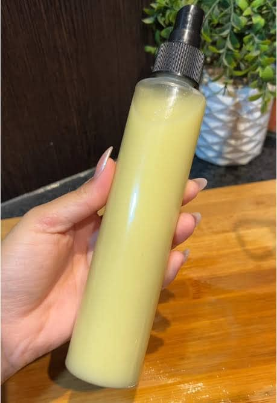
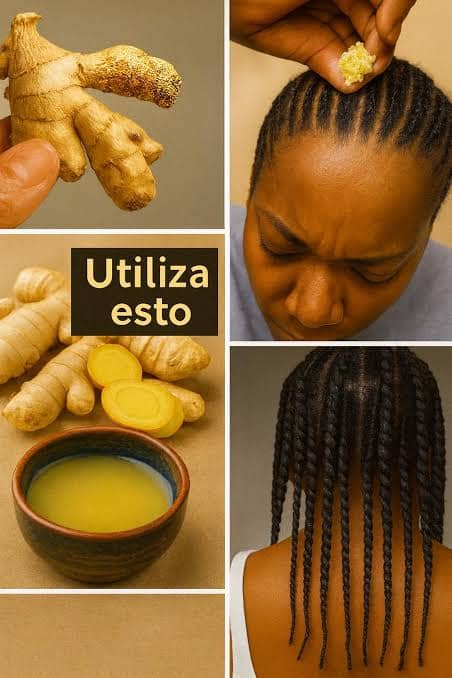
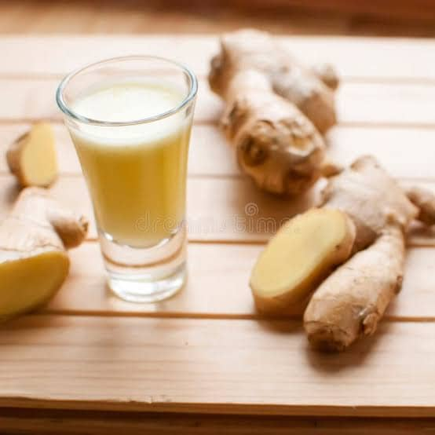
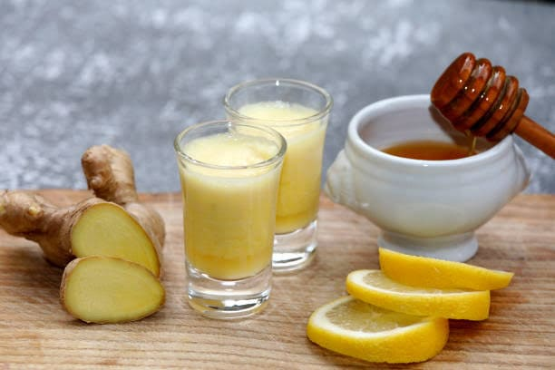

Productos
MENÚ
Pagina PrincipalConocenos
Planta Beneficios
Reproduccion y Usos
Experiencia
Contactos
Memorama
Como parte de nuestro proyecto transversal “Del Jengibre”, trabajamos en la elaboración de diferentes productos utilizando esta planta como ingrediente principal. Durante este proceso no solamente aprendimos sobre sus beneficios y propiedades, sino que también desarrollamos habilidades de investigación, trabajo en equipo, creatividad y organización.
Cada producto fue elaborado después de investigar diferentes recetas, probar ingredientes y analizar cuál era la mejor opción para obtener buenos resultados. Además, trabajamos en el diseño de etiquetas, la presentación y la explicación de cada procedimiento para poder mostrar nuestros productos durante la exposición final del proyecto.
A continuación, se presentan los productos realizados por nuestro equipo, junto con los materiales utilizados, el procedimiento de elaboración y algunas fotografías del proceso.
🧴 Producto 1: Tónico capilar
El primer producto que realizamos fue un tónico capilar natural elaborado a base de jengibre. Decidimos crear este producto debido a que investigamos que el jengibre puede ayudar a fortalecer el cabello, estimular el cuero cabelludo y mejorar la circulación sanguínea en la zona capilar. Además, descubrimos que este ingrediente natural es utilizado en distintos productos de cuidado personal gracias a sus propiedades beneficiosas para el cabello.
También quisimos combinar otros ingredientes naturales que aportaran beneficios adicionales para el cuidado capilar. Por ejemplo, la vitamina E es conocida por sus propiedades nutritivas y antioxidantes, mientras que el aceite de ricino es utilizado frecuentemente para ayudar al fortalecimiento y crecimiento del cabello. Gracias a esta combinación de ingredientes, buscamos elaborar un producto natural que pudiera contribuir al cuidado del cuero cabelludo y mejorar la apariencia del cabello.
Antes de comenzar la preparación, realizamos una investigación sobre cada uno de los ingredientes y sus funciones dentro del producto. Esto nos permitió comprender mejor la importancia de utilizar ingredientes naturales y aprender cómo pueden aprovecharse en la elaboración de productos de higiene y cuidado personal. Además, analizamos las cantidades necesarias de cada componente para obtener una mezcla adecuada y fácil de aplicar.
Durante la elaboración del tónico trabajamos cuidadosamente en cada paso, desde la extracción del jugo de jengibre hasta la mezcla final de todos los ingredientes. También prestamos atención a la higiene del área de trabajo, el correcto uso de los utensilios y la limpieza de los recipientes utilizados durante la preparación. Estas actividades nos ayudaron a desarrollar hábitos de orden y responsabilidad.
Otro aspecto importante fue observar la textura y consistencia del producto. Buscamos que el tónico fuera ligero, fácil de aplicar y cómodo de utilizar sobre el cuero cabelludo. Además, trabajamos en la presentación del envase para que el producto tuviera una apariencia más atractiva y organizada durante nuestra exposición.
🌿 Materiales
- Jengibre fresco
- Vitamina E
- Aceite de ricino
- Agua
- Rallador
- Colador
- Recipiente limpio
- Cuchara para mezclar
- Frasco o atomizador para almacenar el producto
⚗️ Procedimiento
- Primero se lavó cuidadosamente el jengibre para eliminar cualquier residuo o suciedad.
- Después, el jengibre fue rallado cuidadosamente para poder extraer la mayor cantidad posible de jugo natural.
- El jengibre rallado se colocó en un colador y se presionó para obtener el jugo, eliminando los residuos sólidos.
- Posteriormente, el jugo obtenido fue colocado en un recipiente limpio y seco.
- Después se agregaron cápsulas de vitamina E para aportar propiedades nutritivas y antioxidantes al producto.
- Se añadió aceite de ricino, ya que este ingrediente es conocido por ayudar al fortalecimiento y cuidado del cabello.
- Más tarde se agregó una pequeña cantidad de agua para mejorar la consistencia y facilitar la aplicación del tónico.
- Todos los ingredientes fueron mezclados cuidadosamente hasta obtener una mezcla uniforme y bien integrada.
- Posteriormente, el producto fue colocado dentro de un frasco limpio para su mejor conservación y presentación.
- Finalmente, el tónico capilar quedó listo para aplicarse mediante suaves masajes sobre el cuero cabelludo.
✨ Resultados obtenidos
El resultado final fue un tónico capilar líquido, de apariencia natural y con aroma característico del jengibre. La mezcla logró una consistencia adecuada para aplicarse fácilmente sobre el cuero cabelludo y el cabello. Además, el producto tuvo una presentación ordenada y atractiva durante la exposición.
Gracias a esta actividad aprendimos sobre los beneficios de los ingredientes naturales y la importancia de seguir cuidadosamente cada procedimiento para obtener mejores resultados. También comprendimos la relevancia de la higiene, la organización y el trabajo en equipo durante la elaboración de productos de cuidado personal.
La elaboración de este tónico capilar nos permitió desarrollar habilidades de investigación, preparación y exposición oral. Asimismo, fortalecimos nuestros conocimientos sobre productos naturales y cómo estos pueden ser una alternativa para el cuidado personal. Esta experiencia fue útil y educativa, ya que combinó el aprendizaje científico con la creatividad y el trabajo colaborativo.
 |
 |
🥤 Producto 2: Shot de jengibre
El segundo producto elaborado fue un shot de jengibre, una bebida natural preparada con ingredientes que aportan diferentes beneficios para la salud. Elegimos este producto porque investigamos que el jengibre puede ayudar al sistema inmunológico, favorecer la digestión y aportar energía de manera natural. Además, observamos que se puede combinar muy bien con otros ingredientes saludables como el limón, la miel y la cúrcuma, los cuales también contienen propiedades beneficiosas para el organismo.
Antes de iniciar la preparación, investigamos las características de cada ingrediente y la función que cumple dentro de la bebida. Descubrimos que el limón contiene vitamina C, la miel puede utilizarse como endulzante natural, la cúrcuma es conocida por sus propiedades antioxidantes y la pimienta negra ayuda a potenciar el efecto de algunos componentes naturales. Gracias a esta investigación comprendimos mejor la importancia de consumir productos naturales dentro de una alimentación equilibrada.
Durante la elaboración del shot aprendimos a medir correctamente los ingredientes y a utilizar la licuadora de manera adecuada y segura. También practicamos la organización del espacio de trabajo, la higiene de los utensilios y el lavado correcto de los ingredientes antes de utilizarlos. Estas actividades nos permitieron desarrollar habilidades relacionadas con la preparación de alimentos y bebidas saludables.
Uno de los aspectos más importantes fue lograr una combinación equilibrada de sabores, ya que el jengibre tiene un sabor fuerte y ligeramente picante. Por ello, fue necesario agregar miel y limón en cantidades adecuadas para mejorar el sabor y hacer la bebida más agradable al consumirla. Además, trabajamos en la presentación del producto para hacerlo más atractivo visualmente durante nuestra exposición.
🌿 Materiales
- Jengibre fresco
- Jugo de limón
- Pimienta negra
- Cúrcuma en polvo
- Miel natural
- Agua
- Licuadora
- Colador
- Vasos pequeños para servir
- Cuchillo y tabla para cortar
⚗️ Procedimiento
- Primero se lavó cuidadosamente el jengibre para eliminar cualquier residuo de tierra o suciedad.
- Después, el jengibre fue cortado en pequeños trozos para facilitar el proceso de licuado.
- Posteriormente, los trozos de jengibre se colocaron dentro de la licuadora.
- Luego se agregó el jugo de limón para aportar sabor fresco y vitamina C a la bebida.
- Más tarde se añadió una pequeña cantidad de cúrcuma y pimienta negra para complementar las propiedades naturales del shot.
- Después se incorporó miel natural para endulzar la mezcla de manera saludable.
- Se agregó agua para facilitar el licuado y obtener una consistencia adecuada.
- Todos los ingredientes se licuaron durante varios minutos hasta obtener una mezcla uniforme y bien integrada.
- Posteriormente, la bebida fue colada para retirar los restos sólidos y lograr una textura más suave.
- Finalmente, el shot de jengibre se sirvió en vasos pequeños y quedó listo para su presentación y degustación.
✨ Resultados obtenidos
El resultado fue una bebida de color amarillo intenso, con aroma cítrico y un sabor fuerte pero agradable. La combinación de ingredientes permitió obtener un producto natural, refrescante y nutritivo. Durante la exposición, el shot de jengibre llamó la atención por su presentación y por los beneficios que se explicaron acerca de sus ingredientes.
Además, este producto nos ayudó a comprender cómo los ingredientes naturales pueden combinarse para crear bebidas saludables y nutritivas. También aprendimos la importancia de la higiene, el orden y el trabajo en equipo durante la preparación de alimentos y bebidas. Gracias a esta actividad, desarrollamos habilidades de investigación, preparación y exposición oral, las cuales fueron fundamentales para completar nuestro proyecto.
 |
 |